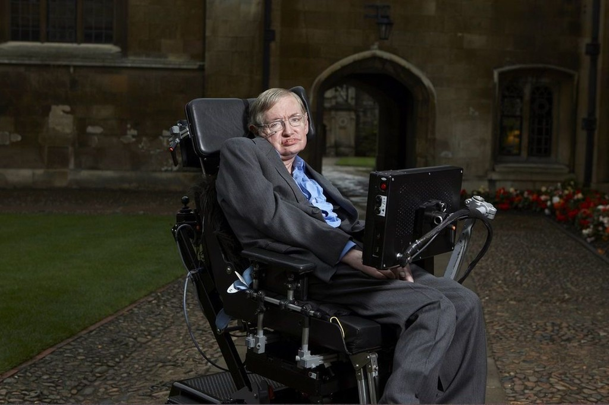

Tribute to : Stephen Hawking
Tributo a Stephen Hawking

"Las personas tranquilas y silenciosas son las que tienen las mentes más fuertes y ruidosas"
TIMELINE
- 8 de enero/1942 Nace en Oxford, Reino Unido
- 1962 Comienza a desarrollar esclerosis lateral amiotrofica
- 1971 Propone teoria sobre los Mini-agujeros negros
- 2018 Muerte del gran cientifico